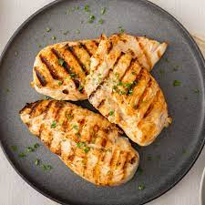

Grilled Chicken

This healthy and simple meal will leave you full without the guilty feeling.
A staple for every household.
High in protein and low in fat. This dish will help you get in shape!
Ingredients
- chicken
- paprika
- salt
- extra virgin olive oil
Instructions
- Coat chicken with olive oil,salt, and sprinkle with paprika.
- Put it on the grill until the internal temperature reacher 165.
- Let chicken rest for 15 minutes.
Back to Home